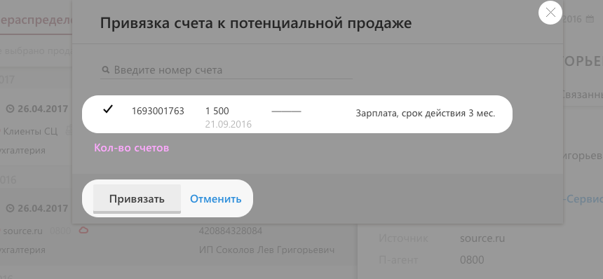

Интересно, как часто у ПП есть ответсвенный.
Category: pp-cycle-actions
Action: set-manager
Label: button // нажали кнопку на панельке
Label: submit
Label: cancel
Label: close
Хочется понять, сколько счетов привязывают, выставляют ли счет из ПП.
Что происходит чаще.
Category: pp-cycle-actions
Action: create-bill // нажали на кнопку «выставить счет»
Action: bind-bill // нажали на кнопку «привязать счет»
Label: button
Хочется видеть, выставили счет или нет.
Category: pp-cycle-actions
Action: create-bill
Label: created // когда нажали в мастере «выставить счет на...»
Label: cancel // когда закрыли мастер
Если привязывают счета, то сколько за раз.

Category: pp-cycle-actions
Action: bind-bill
Label: bound-N // нажали в мастере «привязать», N—кол-во привязанных счетов
Label: cancel // закрыли лайтбокс
Хочется понимать, как часто отказывают и с какой причиной,
пишут ли комментарий
Category: pp-cycle-actions
Action: finish
Label: refused-<причина> // нажали в мастере «привязать», N—кол-во счетов
Label: refused-comment // когда написали комментарий
Label: refused-comment-empty // без комментариев
Category: pp-cycle-actions
Action: transfer
Label: to-other-patrner